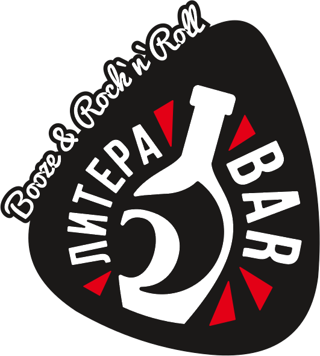

Подари этот вечер себе
Лучшее предложение
Коктейль "Литера" на ромовом имбирном ликёре
Ром, имбирный ликер, сок лимона, содовая, апельсин
350
Коктейль "Литера" на имбирном сиропе, б/а br> имбирный сироп, сок лимона, содовая, апельсин
300
Сливочный сет настоек (3 шота)
Пломбир-ириска, банан, кокос:
300
Ягодный сет настоек (3 шота)
брусника, смородина, вишня
450
Коктейль "Шампань Рояль"
Просекко, клубника, малина, мята, персиковый ликер
490
Коктейль "Олд фешен"
Бурбон, тростниковый сахар, биттер, ангостура
360
Имбирный лимонад б/а
имбирный фреш, содовая, лимонный сок, секретный ингредиент
240
Игристое вино, розовое сух.
Colle Bacco, Pinot Grigio, Италия 2021г. 750 ml
Акция до 22:00
1600
Легкий КАЛЬЯН "ЛИТЕРА"
вкус подбирает кальянщик лично для Вас
700
Виски "Jameson" 40 ml
300
Бурбон "Old Virginia" 40 ml
300
Портвейн
Tres Arcos Ruby Port, Португалия, 2018г. 100/750 ml
350/1999
Шот "Зарядка"
ледяная водка, ледяной энергетик
150
Какао с любовью 180 ml
ароматный какао на сливках c добавлением корицы/сиропов по желанию
250
Авторские настойки Литера шоты
Пломбир Сливочная ириска
120
Сливочный банан
120
Сливочный кокос
120
Брусника
180
Клюква
180
Чёрная смородина
180
Вишня
180
Клубника с Чили
180
Облепиха
180
Ром на вишне
290
Малина на джине
290
Перцовка
135
Хреновуха
135
Томат
135
Кедровая на полугаре 42,5
290
Шоты
МЕГА B-52
кофейный ликёр, сливочный ликёр, трипл сек
960
B-52
кофейный ликёр, сливочный ликёр, трипл сек
280
B-53
кофейный ликёр, сливочный ликёр, абсент
280
Jagermeister
350
Tiramisu
ликер Creme de Cassis, кофейный ликер, сливки, корица
250
The еnd
кофейный ликер, самбука, абсент
280
The daughter of Boyarsky
гренадин, тобаско, водка
240
Red Dog
серебряная текила, самбука, табаско
350
Алкогольные коктейли
Лимонный пирог
водка, ликер адвокат, ваниль, сок лимона
400
Линчбурский лимонад
бурбон, апельсиновый ликер, содовая
490
Наоми сквиз
кофейный ликер, малина, смородина, взбитые сливки
450
Федерико Феллини
просеко, настойка облепиха, персиковый ликер
400
Джин Мул
джин, имбирь, сок лимона
400
Сингапурский слинг
джин, вишнёвый бренди, апельсиновый ликер, биттер
450
Секс на пляже
водка, персиковый ликер, клюквенный морс, сок ананаса
400
Белый Русский
кофейный ликёр, водка, сливки
300
Мохито
Белый ром мята, лайм, сахарный сироп, содовая
390
Негрони
джин, красный вермут, кампари
500
Апероль Сприц
апероль, игристое вино, апельсин
490
Пина Колада
белый ром, ананас, кокос, лайм
490
Маргарита
серебряная текила, трипл сек, лайм
450
Дайкири
белый ром, лайм
400
Космополитан
цитрусовая водка, апельсиновый ликёр, клюква и лайм
400
Лонг Айлэнд Айс Ти
500 мл все мы знаем о чём речь
590
Кровавая Мэри
томатный сок, водка и специи
450
Бульвардье
бурбон, красный вермут, кампари, апельсин
500
Манхэттен
бурбон, красный вермут, ангостура
500
Том Коллинз
джин, лайм, тростниковый сахар, содовая
380
Мэри Пикфорд
ром, ликёр мараскино, гренадин, сок ананаса
450
Гимлет
джин, кордиал лайм, лимон
400
Кловер Клаб
джин, малина, лайм, пенка
450
Крестный отец
бурбон, амаретто
400
Палома
серебряная текила, лайм, грейпфрут, содовая
480
Кампари Сауэр
кампари, грейпфрут, лайм, пенка
400
Джин-тоник
240
Виски-кола
270
Куба Либре
ром, кола, лайм
270
Санта Либре
ром, спрайт, лайм
270
Порн Стар Мартини
маракуйя, ванильная водка, бузина, игристое вино
500
Виски Сауэр
бурбон, сауер микс, пенка
500
Май-Тай
Ром белый, ром золотой, трипл-сек , сироп миндаля, сок апельсина, сок ананаса
490
Зеленая Фея
серебряная текила, абсент, водка, белый ром, блю кюрасао, дынный ликёр, лайм, энергетик
590
Текила Санрайз
серебряная текила, апельсиновый сок, гренадин
450
Венозная кровь
розовый джин, апероль, вишнёвый сок
390
Грейхаунд
грейпфрутовый сок, водка, лайм
270
Бабл гам Сауэр
виски, сироп Bubble gum, сок лимона, яичный белок
490
Линейка коктейлей Литера special edition
Коктейль "Шампань Рояль"
Просекко, клубника, малина, мята, персиковый ликер
550
Коктейль "Литера" на ромовом имбирном ликёре
Ром, имбирный ликер, сок лимона, содовая, апельсин
350
Коктейль "Литера" на имбирном сиропе, б/а br> имбирный сироп, сок лимона, содовая, апельсин
300
Вина и игристые
Игристое вино сух.
Prosecco Fonte, Италия, Венето, 750 ml
2400
Игристое вино сух.
Frettino Brut, Италия, Венето, 750 ml
1900
Игристое вино п/сладкое
Frettino Asti, Италия, Венето, 750 ml
2190
Игристое вино п/сладкое
Nuviana Cava Reserva, Испания, Каталония, 750 ml
3600
Игристое розовое вино сух.
Chateau Tamagne Heritage, Россия, Тамань 2021, 750 ml
1700
Игристое розовое вино сух.
Colle Bacco Pinot Grigio, Италия, 2021, 750 ml
2400
Вино белое сух
Aresti Gewurztraminer, Чили, Долина Курико, 2022г. 750 ml
1800
Вино белое сух.
Arco Bay Sauvignon Blanc, Новая Зеландия 2020г. 750 ml
3200
Вино белое сух.
Cotes du Rhone Richebois, Франция, Долина Роны 2020г. 750 ml
1900
Вино белое п/сухое
Aresti Sauvignon Blanc, Чили, Долина Курико, 2022г. 750 ml
1900
Вино белое п/сухое
Alto Lima Vinho Verde, Португалия, Винью Верде, 2020г. 750 ml
2800
Вино белое п/сладкое
Maison Castel Muscat, Франция, 2021г. 750 ml
2200
Вино белое п/сладкое
Curicano Moscato, Чили, Долина Итата 2022г. 750 ml
2200
Вино розовое п/сладкое
Rose d'Anjou Elysis, Франция, Долина Луары, 2021г. 125/750 ml
400/2100
Вино красное п/сладкое
Teliani Valley Kindzmarauli, Грузия, Кахетия, 2021г. 125/750 ml
450/2500
Вино красное сух.
Perdeberg Cellar Pinotage, ЮАР, Паарл, 2021г. 750 ml
2600
Вино красное сух.
Boccantino Nero D'Avola,Сицилия, 2021г. 750 ml
2100
Вино розовое п/сладкое.
Tornberries Zinfandel Rose, США, Калифорния, 2020г. 750 ml
2000
Вино красное п/сухое.
Pavonero Zinfandel, Италия, Апулия, 2021г. 750 ml
2200
Вино ежевичное п/сладкое.
"Oshakan", Армения, Араратская долина, 2022г. 125/750 ml
400/2100
Крепкие напитки
Коньяки и бренди
Martell VSOP, Франция, 40 ml.
1460
Roullet VSOP, Франция, 40 ml.
590
Roullet VS, Франция, 40 ml.
450
Torres 10 Gran Reserva, Испания, 40 ml.
400
Виски и Бурбон
Akashi Single Malt, Япония, 40 ml.
890
Akashi Blended, Япония, 40 ml.
490
Glenlivet 12, Шотландия, 40 ml.
890
Glenfiddich, 12, Шотландия, 40 ml.
850
Loch Lomond 12, Шотландия, 40 ml.
690
Laphroaig, 10, Шотландия, 40 ml.
990
Auchentoshan American OAK, Шотландия 40 ml.
850
Monkey Shoulder, Шотландия, 40 ml.
850
Loch Lomond Single Grain, Шотландия 40 ml.
550
Chivas regal 12, Шотландия, 40 ml.
850
Ballantines, Шотландия, 40 ml.
350
Whistler Smoky, Ирландия, 40 ml.
650
Jameson, Ирландия, 40 ml.
490
Maker's Mark, Америка, 40 ml.
850
Jack Daniels, Америка, 40 ml.
500
Jim Beam, Америка, 40 ml.
450
Old Virginia, Америка, 40 ml.
300
Ром
Viejo de Caldas 15, Колумбия, 40 ml.
390
Lazy Dodo, о.Маврикий, 40 ml.
590
Viejo de Caldas 8, Колумбия, 40 ml.
390
Darren 327 Fortis XO, Карибы, 40 ml.
580
Havana Club 7, Куба, 40 ml.
500
Havana Club 3, Куба, 40 ml.
390
La Criolla Dark, Карибы, 40 ml.
300
La Criolla Golden Spiced, Карибы, 40 ml.
300
Джин
Roku Gin, Япония 40 ml.
490
Beefeater Dry, Англия, 40 ml.
400
Beefeater Pink Strawberry, Англия 40 ml.
460
Gordon's Dry, Шотландия, 40 ml.
380
Кальяны авторские
Легкий / Средний / Крепкий
вкус подбирает кальянщик лично для Вас
1000/1300/1800
Долгоиграющий кальян + 200р. к любой крепости
Фруктовая чаша
апельсин/яблоко/лимон
2000
Фруктовая чаша на вине
апельсин/яблоко/лимон
2300
Пиво и напитки на кране 0,5
Bowler IPA 6.1%
390
Blue Monkey Ale 5.3 %
290
Hedegger Hell 4.7%, 300/500 ml.
280/330
Collins British Stout 4.5% Англия 300/500 ml.
360/550
Petrus RED 8.5% Бельгия 300/500 ml.
430/650
Fruh Kolsch, бут., 4.8%, Германия, 500 ml
550
Mort subite lambic вишня, бут., 4%, Бельгия 250 ml
400
Schneider Weisse б/а бут. Германия, 500 ml
450
Безалкогольные коктейли
Мохито б/а
Мята, лайм, сахарный сироп, содовая
290
Имбирный лимонад б/а
имбирный фреш, содовая, лимонный сок, секретный ингредиент
240
Вишнёвый эль
вишня, имбирный эль, лайм
240
Пина Колада
кокос, ананасовый сок, сливки
330
Тропический
маракуйя, ананас, жасминовая содовая
320
Свежевыжатые соки
Апельсиновый фреш
300
Грейпфрутовый фреш
350
Кофейные напитки чаи соки прочие
Какао с любовью 180 ml
ароматный какао на сливках c добавлением корицы/сиропов по желанию
250
Эспрессо
150
Американо
150
Доппио
240
Капучино
260
Флет Уайт
260
Раф
290
Чай френч-пресс 500 ml травяной ягодный зелёный чёрный
280
Сок Апельсин Вишня Яблоко и прочие
180
Энергетик
180
Cola Pepsi Schweppes Evervess
180
Вода газированная
150
Вода негазированная
90
Закуски
Запеченный сыр камамбер с брусничным соусом
650
Фисташки жареные солёные
290
Фритюр
Большое ассорти закусок: сырный хворост, баварские колбаски, луковые кольца, хрустящие гренки, картофель фри, подаётся с двумя фирменными соусами
890
Солёный сырный хворост (идеально к пиву)
230
Шарики из сыра моцарелла в хрустящей панировке с чесночным соусом
390
Картофель фри/дольки с томатным соусом
190
Луковые кольца фри
290
Хрустящие гренки с чесночным соусом
240
Сендвичи, бургеры, кесадильи
Большой сочный фирменный бургер из мраморной говядины с халапеньо, маринованным огурчиком и фирменными соусами
490
Большой зелёный бургер с сочным куриным филе, томатами, сыром моцарелла, маринованным луком и соусом песто
450
Кесадилья с курицей, креветками и ананасом
370
Кесадилья с говядиной, грибами и халапеньо
390
Сэндвич с куриным филе, свежим томатом и маринованным огурчиком
350
Сэндвич с лососем, творожным сыром, свежим огурцом и сырным соусом
350
Салаты
Обжаренный на гриле сыр халлуми, карамелизированная груша, кедровые орехи, руккола
690
Салат с хрустящими баклажанами, сливочным сыром, свежими томатами и оригинальными соусами
450
Цезарь со свежеобжаренным куриным филе, оригинальным соусом с добавлением каперсов и анчоусов
450
Цезарь с слабосолёным лососем, оригинальным соусом с добавлением каперсов и анчоусов
550
Цезарь с атлантическими креветками и оригинальным соусом
600
Супы
Борщ с телятиной
Подаётся с соленым салом, сметаной и тостом бородинского хлеба
350
Сливочная уха из лосося
филе лосося, сливки, тост бородинского хлеба
380
Основные блюда
Запечённая телятина под винной глазурью
с картофельными дольками и ассорти из свежих овощей
блюдо на компанию 500/1000 гр.
1100/1950
Лосось с нежным сливочным пюре из цветной капусты и соусом релиш
1250
Запечённая свинина на ребрышках в соусе барбекю
550
Запечёные крылышки ЛИТЕРА глазированные в особом соусе
350
Сочные куриные шашлычки-терияки подаются на обжареной тортилье
550
Бефстроганов из телятины с бельгийскими картофельными вафлями
400
Крупные Тигровые креветки со сливочно-сырным соусом «Дор Блю»
1250
Медальоны из свиной вырезки под сливочно-горчичным соусом с гарниром из картофельных долек
550
Пикантные колбаски-гриль под зерновой горчицей с картофельными дольками
550
Куриные колбаски в тайском стиле с картофельными хешбраунами и соусом ананас-чили
450
Овощи гриль шампиньоны, баклажаны, болгарский перец, кабачок, томат лук аль денте
450
Десерты
Сладкая бельгийская вафля с шариком мороженого и карамельным соусом
340
Шоколадный фондан с шариком мороженого и соусом из шоколада
350
Пломбир с солёным соусом «Блю Чиз» и фисташковой крошкой
310
Яблочный/вишнёвый/грушевый штрудель с мороженым и топингом
300
Дополнительные услуги
Продлить работу заведения
15000/час
Заказ песни из плей-листа Литеры
(только по предоплате через официанта или бармена)
500
Заказ живой музыки из репертуара Литеры
(только по предоплате через официанта или бармена)
1000
Игра в роскошные нарды
1000р/час
Поздравление со сцены
500